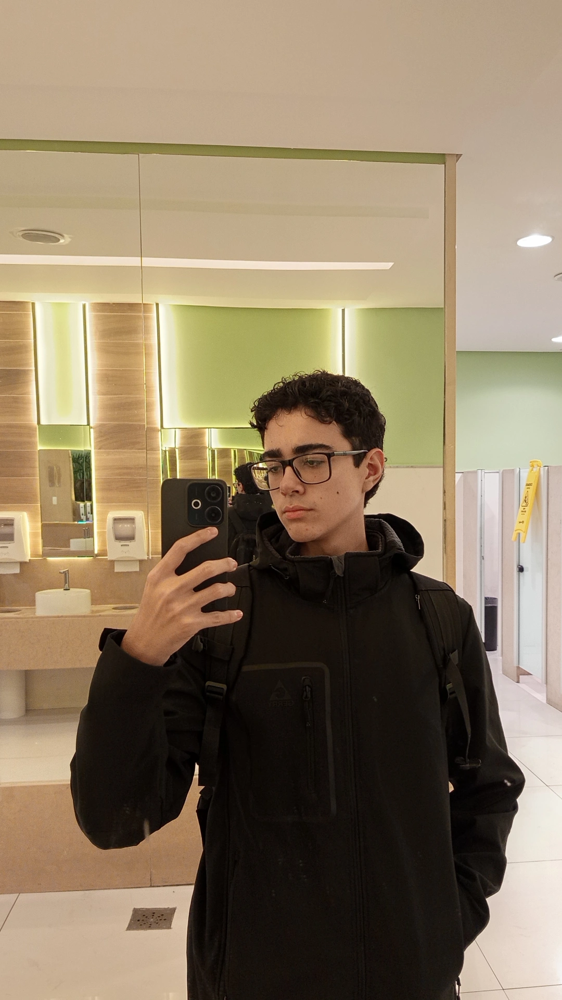

Estudante de Sistemas de Informação, apaixonado por tecnologia, música e desenvolvimento de software. Estou no início da graduação e em busca constante de aprendizado e evolução.
Meu objetivo é trabalhar na área de desenvolvimento de software, com interesse especial em trabalhar na Autoglass. Quero consolidar uma base técnica sólida em programação e análise de dados, contribuindo com responsabilidade e foco em resultados.
Sou fã de música clássica do rock, especialmente The Beatles, Eagles e Oasis. Minha música favorita dos Beatles é The Long and Winding Road. As músicas dessas bandas me acompanham em momentos importantes e me fazem refletir.
Também gosto de jogar videogame, principalmente FIFA, onde já participei e venci um campeonato. Toco bateria, o que me ajuda a desenvolver foco e consistência.
Torço para o Flamengo e no tempo livre consumo conteúdo sobre tecnologia e criação de projetos, sempre buscando aprender algo novo.
The Long and Winding Road — The Beatles. Uma das músicas que mais me marcou.
Fiz o ensino fundamental e médio no SESI Araçás, onde participei da equipe de robótica, atuando no desenvolvimento de soluções para desafios reais em competições. Atualmente curso Sistemas de Informação na faculdade.
Participei do projeto AutoTech, em parceria com a Autoglass, contribuindo na execução técnica e mentoria em robótica e programação. Também participei do Inova Teen, da FECINC e da cerimônia do Prêmio Biguá de Sustentabilidade, promovido pela Rede Gazeta.
| Matéria | Resumo |
|---|---|
| Construção de Software para Web | Foca no desenvolvimento de sites e aplicações web. Aprendo sobre estrutura de páginas, funcionamento de sistemas na internet e como transformar ideias em produtos digitais. |
| Design e Desenvolvimento de Banco de Dados I | Ensina a organizar e estruturar dados de forma eficiente. Inclui modelagem e criação de sistemas que armazenam e manipulam informações. |
| Experiência e Interface com o Usuário | Voltada para UX/UI. Aprendo a criar interfaces intuitivas e pensar na experiência do usuário. |
| Fundamentos de Tecnologia da Computação | Aborda conceitos básicos da computação, como funcionamento de sistemas, hardware, software e princípios gerais da área. |
| Lógica para Computação | Trabalha o raciocínio lógico e matemático aplicado à programação. Base essencial para resolver problemas e entender algoritmos. |
Quero trabalhar com desenvolvimento de software, preferencialmente na Autoglass, aplicando meu conhecimento técnico em projetos reais. Também pretendo continuar evoluindo em programação, banco de dados e análise de dados ao longo da graduação.